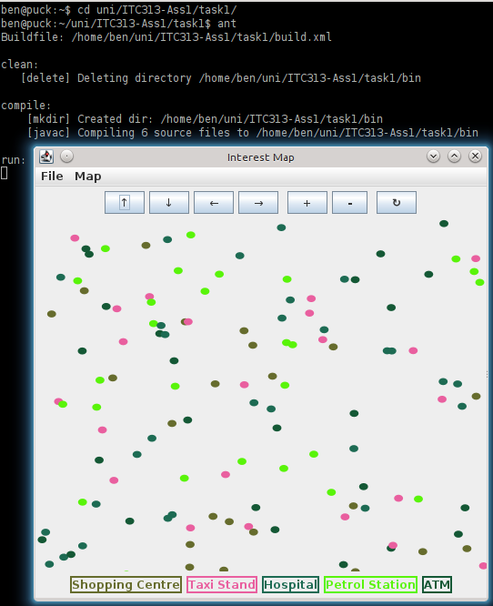
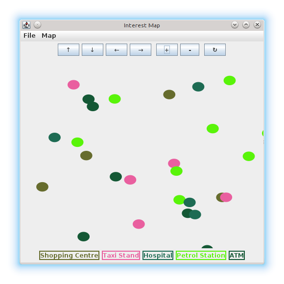
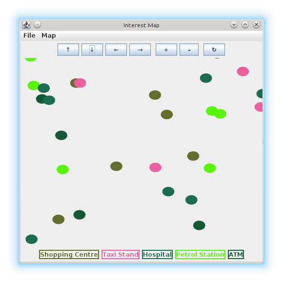
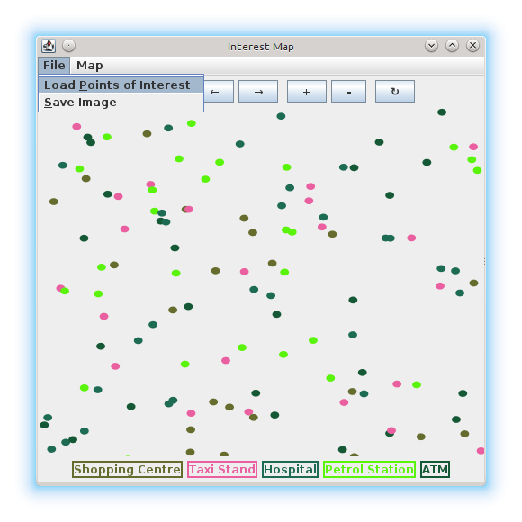
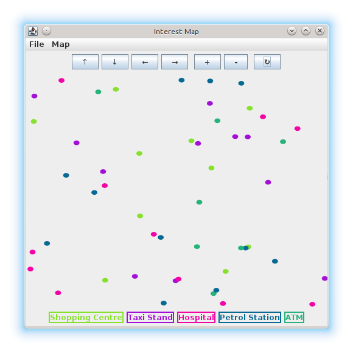
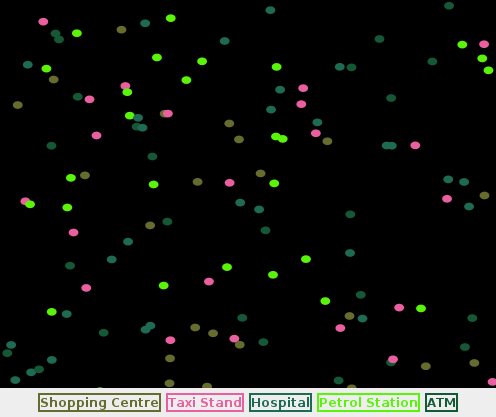

Requires au.com.bytecode.opencsv.CSVReader.
On Debian, install libopencsv-java and include /usr/share/java/opencsv.jar when compiling.
Extract
unzip 11429074_ass1.zip
cd task1Compile and run using ant
antCompile and run without ant
mkdir bin
javac -d bin -classpath bin:/usr/share/java/opencsv.jar \
-sourcepath src src/interestmap/InterestMap.java
java -classpath /usr/share/java/opencsv.jar:bin interestmap.InterestMapAfter running:

Use the plus and minus + - buttons to zoom in and out:

Use the arrow ↑ ↓ → ← buttons to pan around:

Use the circle arrow $\circlearrowright$ ↻ button to reset the zoom and pan back to normal.
Open a new file with the File → Load Points of Interest menu:

New File
Colours are generated randomly. Re-generate colours with the Map → Change Colours:

Save the current view as an image with the File → Save Image menu:
For some reason this comes out with a black background!
